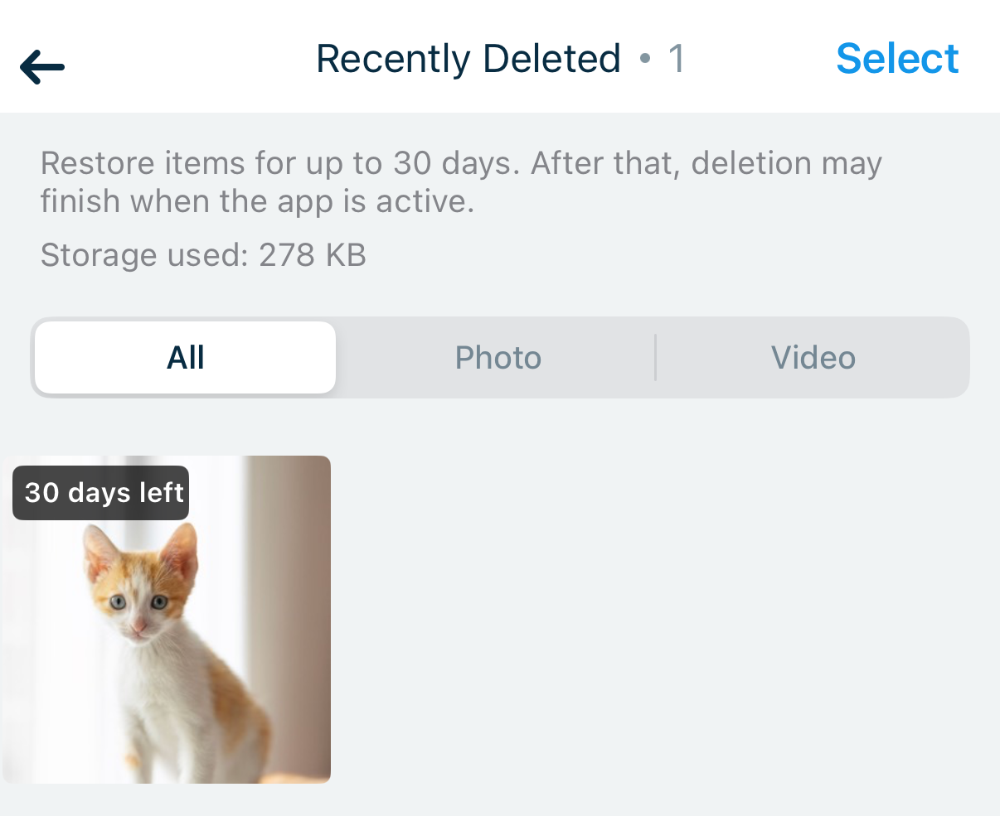
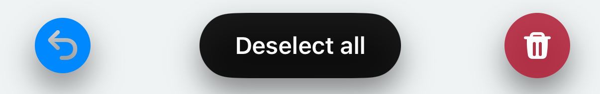

1. Recently Deleted
Restore deleted photos and videos for up to 30 days.
Albums → Recently Deleted

After selecting an item

Recently Deleted keeps using device storage until items are permanently deleted. It cannot recover items deleted before this update or lost when you delete the app, and it is not a backup. Cleanup after 30 days may finish when the app is active.